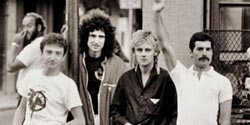
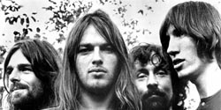
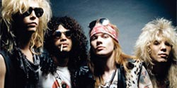
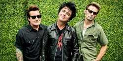
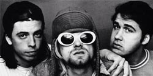
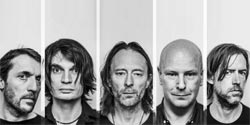
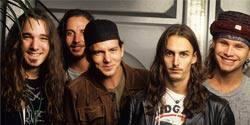

به عنوان کسی که بیشتر ساعات شبانه روز را در حال گوش دادن به موسیقی است،
در اینجا گروههای موسیقی که از نظرم بهترین هستند را معرفی کرده ام.

Queen
کوئین (انگلیسی: Queen) یک بند راک بریتانیایی است که در سال
۱۹۷۰ در لندن تشکیل شد. ترکیب کلاسیک آنها فردی مرکوری
(خوانندهٔ اصلی، پیانو)، برایان می (گیتار، آواز)،
راجر تیلور (درام، آواز) و جان دیکن (بیس) بود.
آثار ابتدایی آنها تحت تأثیر پراگرسیو راک،
هارد راک و هوی متال بود، اما بند به تدریج
با در اختیار گرفتن سبکهای بیشتر مانند آرنا راک
و پاپ راک، به کارهای معمولیتر و رادیویی پسندتر پرداخت.

Pink Floyd
پینک فلوید (انگلیسی: Pink Floyd) یک گروه موسیقی راک انگلیسی
است که در سال ۱۹۶۵ در لندن بنیان نهاده شد. این گروه
یکی از تأثیرگذارترین گروههای موسیقی راک انگلیسی
است که توانست با موسیقی پراگرسیو و سایکدلیک،
اشعار معناگرا و استفاده از تجربیات صوتی و خلق
اجراهای زنده، به موفقیت بینالمللی دست یابد و به یکی
از محبوبترین و تأثیرگذارترین
گروههای موسیقی تبدیل شود.

Guns N' Roses
گانز اَن رُزز (به انگلیسی: Guns N' Roses) گروه هارد راک نامدار آمریکایی است در فوریه
۱۹۸۵، در شهر لسآنجلسِ ایالتِ کالیفرنیای
آمریکا توسط اعضای دو گروه ال ای گانز
و هالیوود رز، و به رهبری اَکسل رُز تشکیل شد.
زمانیکه سبکهای دَنس و پاپ راک بر موسیقی پاپ سلطه
داشتند، گانز ان رُزز توانست دوباره راک اند
رول را به جدول موسیقیهای پرفروش برگرداند.
جدا از خواننده توانمند گروه، اکسل رز، که
دارای گستردهترین رنج وکال در بین خوانندههای مرد
تاریخ است، میتوان به تافتهٔ جدا بافته گروه،
گیتاریست افسانه ای؛ اسلش، اشاره کرد.

Green Day
گرین دی (به انگلیسی: Green Day) از گروههای بزرگ سبک موسیقی پانک راک است و مبدا این گروه در
سال ۱۹۸۷ و ایالت کالیفرنیا است، رهبر گروه بیلی جو آرمسترانگ میباشد .
این گروه اولین بار با آهنگ When I Come Around در آمریکا و صحنه موسیقی راک مطرح گشت.
آلبوم 21st Century Breakdown و نمایش موزیکال آلبوم "احمق امریکایی" در سال
۲۰۰۹ نیز پنجمین جایزه گرمی را نصیب این گروه آمریکایی کرد.

Nirvana
نیروانا (به انگلیسی: Nirvana) یک گروه راک آمریکایی بود که در سال ۱۹۸۷ توسط کرت کوبین (گیتاریست و خواننده) و
کریست ناواسلیک (گیتار بیس) بنیان نهاده شد. نیروانا چند نوازندهٔ درامز مختلف را به خود دید که هر کدام
مدت کوتاهی در گروه عضویت داشتند، اما بالاخره دیو گرول که در سال ۱۹۹۰ وارد گروه شد، جای خود را در گروه
محکم کرد. با وجود اینکه گروه نیروانا تنها سه آلبوم استودیویی در طول هفت سال فعالیت خود منتشر کرد،
اما از این گروه به عنوان یکی از تأثیرگذارترین و مهمترین گروههای موسیقی راک در عصر مدرن یاد میشود.

Radiohead
رِیدیوهِد (به انگلیسی: Radiohead) نام یک گروه راک انگلیسی است که در سال ۱۹۸۵، در ابینگدن،
آکسفوردشر پایهگذاری شد.[۱] اعضای بنیانگذار گروه تام یورک (خواننده، گیتار، پیانو و کیبورد)،
جانی گرینوود (لید گیتار، کیبورد و دیگر سازها)، اد اوبراین (گیتار و خوانندهٔ پسزمینه)،
کالین گرینوود (بیس) و فیل سلوی (درام، سازهای کوبهای و خوانندهٔ پسزمینه) هستند.

Pearl Jam
پرل جم (به انگلیسی: Pearl Jam) گروه موسیقی راک آمریکایی است که در سال ۱۹۹۰ در سیتل شکل گرفت.
اعضای فعلی گروه عبارتند از: ادی ودر (خوانندهٔ اصلی و گیتاریست)،
جف ایمنت (نوازندهٔ گیتار بیس)، استون گوسارد (گیتار الکتریک) و
مایک مک کریدی (نوازندهٔ گیتار بیس). درامر فعلی گروه، مت کامرون،
عضو سابق گروه ساوند گاردن است که از سال ۱۹۹۸ با پرل جم همکاری دارد.